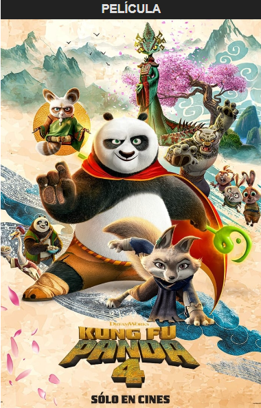

Sinopsis
Po se prepara para ser el líder espiritual del Valle de la Paz, buscando un sucesor como Guerrero Dragón. Mientras entrena a un nuevo practicante de kung fu, enfrenta al villano llamado "el Camaleón", que evoca villanos del pasado, desafiando todo lo que Po y sus amigos han aprendido.